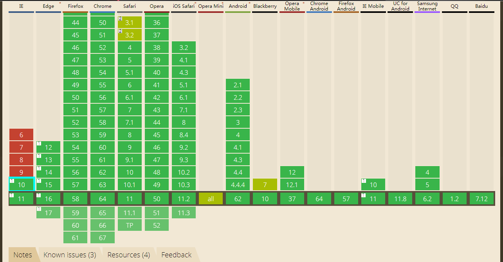

在了解用法之前先来了解一下支持性

看起来是大好河山一片绿啊，IE10往上也都支持了，所以以后在使用中就可以大胆使用了。作为我们前端人员，我觉得这个是要学习和掌握的基础技能。
text-shadow:[颜色 x轴偏移量 y轴偏移量 模糊半径],[颜色 x轴偏移量 y轴偏移量 模糊半径 ]...
text-shadow:[x轴偏移量 y轴偏移量 模糊半径 颜色 ],[x轴偏移量 y轴偏移量 模糊半径 颜色 ]...
颜色取值：可以是色值或者rgba，
x轴取值：在x轴上的偏移量，正值向右偏移，负值向左偏移，
y轴取值：在y轴上的偏移量，正值向下偏移，负值向上偏移，
模糊半径：指阴影的模糊程度，取值不能为负，取值越大阴影越模糊，反之则越清晰，
不设置的话就是不写或者重置text-shadow:none;
用法了解了来了解一下具体的展示效果：
demo1外发光效果
demo2外发光效果
demo3投影效果
demo4投影效果
demo5模糊效果
demo6描边效果
demo7 3D效果
demo8 3D效果
基本上这些效果就已经满足我们平时的开发需求了